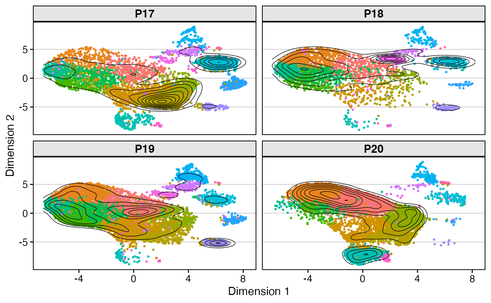
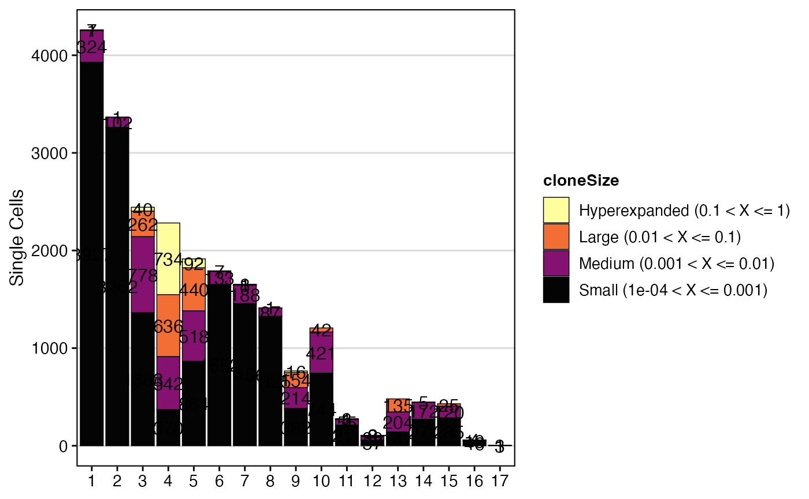
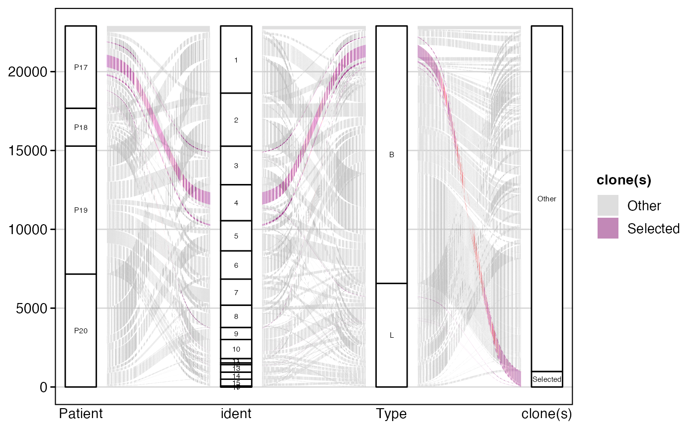
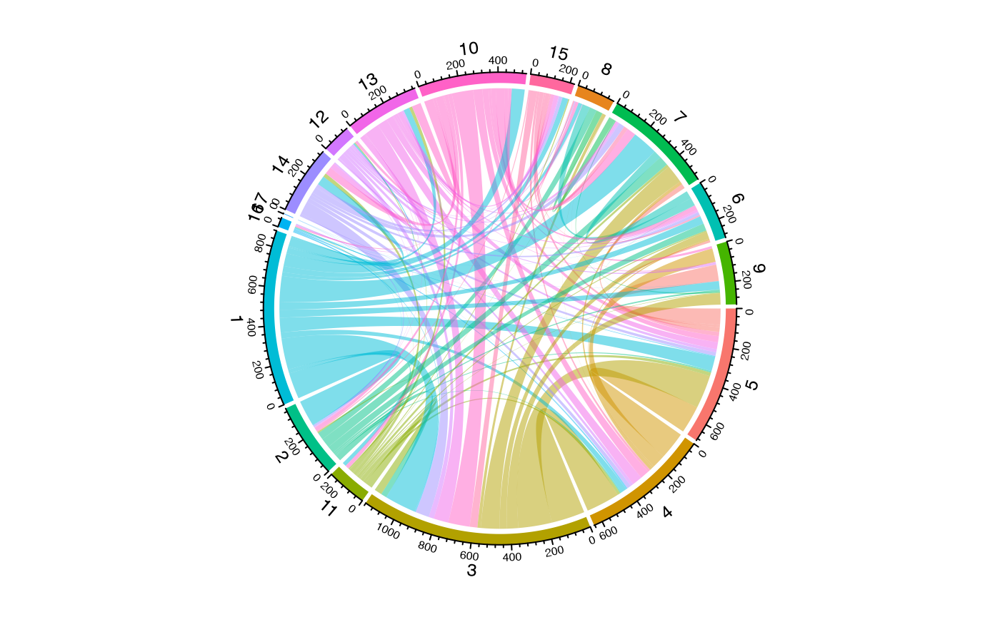
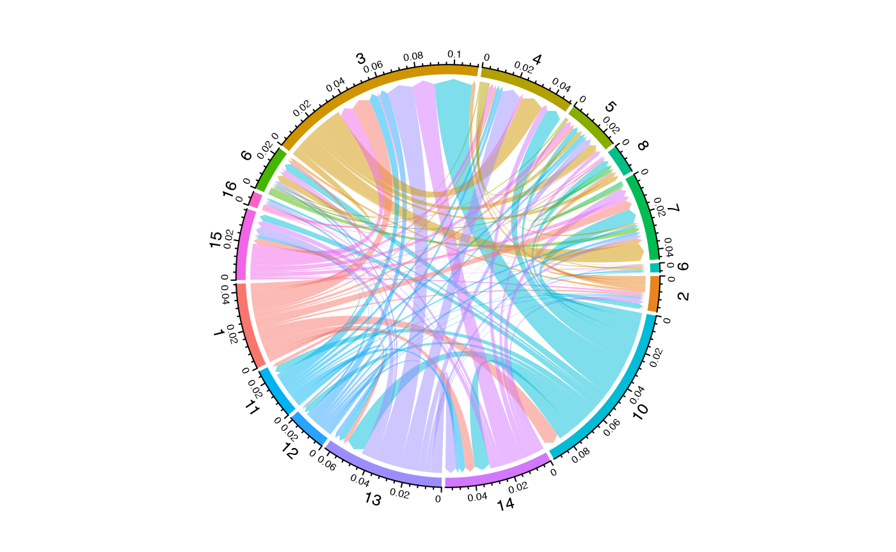

Visualizations for Single-Cell Objects
Compiled: October 31, 2025
Source:vignettes/articles/SC_Visualizations.Rmd
SC_Visualizations.RmdclonalOverlay
Using the dimensional reduction graphs as a reference,
clonalOverlay() generates an overlay of the positions of
clonally-expanded cells. It highlights areas of high clonal frequency or
proportion on your UMAP or tSNE plots.
Key Parameters for clonalOverlay()
-
sc.data: The single-cell object aftercombineExpression(). -
reduction: The dimensional reduction to visualize (e.g., “umap”, “pca”). Default is “pca”. -
cut.category: The metadata variable to use for filtering the overlay (e.g., “clonalFrequency” or “clonalProportion”). -
cutpoint: The lowest clonal frequency or proportion to include in the contour plot. -
bins: The number of contours to draw.
clonalOverlay() can be used to look across all cells or
faceted by a metadata variable using facet.by. The overall
dimensional reduction will be maintained as we facet, while the contour
plots will adjust based on the facet.by variable. The
coloring of the dot plot is based on the active identity of the
single-cell object.
This visualization was authored by Dr. Francesco Mazziotta and inspired by Drs. Carmona and Andreatta and their work with ProjectTIL, a pipeline for annotating T cell subtypes.
clonalOverlay(scRep_example,
reduction = "umap",
cutpoint = 1,
bins = 10,
facet.by = "Patient") +
guides(color = "none")
clonalNetwork
Similar to clonalOverlay(), clonalNetwork()
visualizes the network interaction of clones shared between clusters
along the single-cell dimensional reduction. This function shows the
relative proportion of clones flowing from a starting node, with the
ending node indicated by an arrow
Filtering Options for clonalNetwork()
-
filter.clones:- Select a number to isolate the clones comprising the top n number of
cells (e.g.,
filter.clones = 2000). - Select
minto scale all groups to the size of the minimum group.
- Select a number to isolate the clones comprising the top n number of
cells (e.g.,
-
filter.identity: For the identity chosen to visualize, show the “to” and “from” network connections for a single group. -
filter.proportion: Remove clones from the network that comprise less than a certain proportion of clones in groups. -
filter.graph: Remove reciprocal edges from one half of the graph, allowing for cleaner visualization.
Now, visualize the clonal network with no specific identity filter:
#ggraph needs to be loaded due to issues with ggplot
library(ggraph)
#No Identity filter
clonalNetwork(scRep_example,
reduction = "umap",
group.by = "seurat_clusters",
filter.clones = NULL,
filter.identity = NULL,
cloneCall = "aa")
We can look at the clonal relationships relative to a single cluster
using the filter.identity parameter. For example, focusing
on Cluster 3:
#Examining Cluster 3 only
clonalNetwork(scRep_example,
reduction = "umap",
group.by = "seurat_clusters",
filter.identity = 3,
cloneCall = "aa")
You can also use the exportClones parameter to quickly
get clones that are shared across multiple identity groups, along with
the total number of clone copies in the dataset.
shared.clones <- clonalNetwork(scRep_example,
reduction = "umap",
group.by = "seurat_clusters",
cloneCall = "aa",
exportClones = TRUE)
head(shared.clones)## # A tibble: 6 × 2
## clone sum
## <fct> <int>
## 1 CVVSDNTGGFKTIF_CASSVRRERANTGELFF 906
## 2 CAERGSGGSYIPTF_CASSDPSGRQGPRWDTQYF 140
## 3 CAVTFHYNTDKLIF_CASSQDRTGLDYEQYF 122
## 4 CAVRDDGNTGFQKLVF_CASSQDFNDGGLNIQYF 119
## 5 CARKVRDSSYKLIF_CASSDSGYNEQFF 106
## 6 CAVGAQQGGKLIF_CASSLSLSDGRHGYTF 101highlightClones
The highlightClones() function allows you to
specifically visualize the distribution of particular clonal sequences
on your single-cell dimensional reduction plots. This helps in tracking
the location and expansion of clones of interest.
Key Parameters for highlightClones()
-
cloneCall: The type of sequence to use for highlighting (e.g., “aa”, “nt”, “strict”). -
sequence: A character vector of the specific clonal sequences to highlight.
To highlight the most prominent amino acid sequences: CAERGSGGSYIPTF_CASSDPSGRQGPRWDTQYF and CARKVRDSSYKLIF_CASSDSGYNEQFF:
scRep_example <- highlightClones(scRep_example,
cloneCall= "aa",
sequence = c("CAERGSGGSYIPTF_CASSDPSGRQGPRWDTQYF",
"CARKVRDSSYKLIF_CASSDSGYNEQFF"))
Seurat::DimPlot(scRep_example, group.by = "highlight") +
guides(color=guide_legend(nrow=3,byrow=TRUE)) +
ggplot2::theme(plot.title = element_blank(),
legend.position = "bottom")clonalOccupy
clonalOccupy() visualizes the count of cells by cluster,
categorized into specific clonal frequency ranges. It uses the cloneSize
metadata variable (generated by combineExpression()) to
plot the number of cells within each clonal expansion designation, using
a secondary variable like cluster. Credit for the idea goes to Drs.
Carmona and Andreatta.
Key Parameters for clonalOccupy() * x.axis:
The variable in the metadata to graph along the x-axis (e.g.,
“seurat_clusters”, “ident”). * label: If TRUE, includes the
number of clones in each category by x.axis variable. *
proportion: If TRUE, converts the stacked bars into
relative proportions. * na.include: If TRUE, visualizes NA
values.
To visualize the count of cells by seurat_clusters based
on cloneSize groupings:
clonalOccupy(scRep_example,
x.axis = "seurat_clusters")
To visualize the proportion of cells by ident (active
identity), without labels:
clonalOccupy(scRep_example,
x.axis = "ident",
proportion = TRUE,
label = FALSE)
alluvialClones
After the metadata has been modified with clonal information,
alluvialClones() allows you to look at clones across
multiple categorical variables, enabling the examination of the
interchange between these variables. Because this function produces a
graph with each clone arranged by called stratification, it may take
some time depending on the size of the repertoire.
Key Parameters for alluvialClones()
-
y.axes: The columns that will separate the proportional visualizations. -
color: The column header or clone(s) to be highlighted. -
facet: The column label to separate facets. -
alpha: The column header to have gradated opacity.
To visualize clonal flow across “Patient”, “ident”, and “Type”, highlighting specific amino acid clones:
alluvialClones(scRep_example,
cloneCall = "aa",
y.axes = c("Patient", "ident", "Type"),
color = c("CVVSDNTGGFKTIF_CASSVRRERANTGELFF", "NA_CASSVRRERANTGELFF")) +
scale_fill_manual(values = c("grey", colorblind_vector[3]))
To visualize clonal flow across “Patient”, “ident”, and “Type”, coloring by “ident”:
alluvialClones(scRep_example,
cloneCall = "gene",
y.axes = c("Patient", "ident", "Type"),
color = "ident") 
alluvialClones() provides a visual representation of
clonal distribution and movement across multiple categorical
annotations. It is particularly effective for tracking how specific
clones or clonal groups transition between different states, tissues, or
cell types, offering a dynamic perspective on immune repertoire
evolution and function.
getCirclize
Like alluvial graphs, we can also visualize the interconnection of
clusters using chord diagrams from the circlize R
package. The first step is to get the data frame output to feed into
thechordDiagram() function in circlize, which
can be done using getCirclize().
This function calculates the relative number of unique and shared
clones based on the group.by variable using the product of
combineExpression(). It creates a matrix the size of the
group.by variable and then simplifies it into instructions
readable by the circlize R package. The output represents
the total number of unique and shared clones by the group.by variable.
If using the downstream circlize R package, please read and
cite the following manuscript.
Key Parameters for getCirclize()
-
proportion: IfTRUE, normalizes the relationship by proportion; ifFALSE(default), uses unique clone counts. -
include.self: IfTRUE, includes counting clones within a single group.by comparison.
To get data for a chord diagram showing shared clones between
seurat_clusters:
library(circlize)
library(scales)
circles <- getCirclize(scRep_example,
group.by = "seurat_clusters")
#Just assigning the normal colors to each cluster
grid.cols <- hue_pal()(length(unique(scRep_example$seurat_clusters)))
names(grid.cols) <- unique(scRep_example$seurat_clusters)
#Graphing the chord diagram
chordDiagram(circles, self.link = 1, grid.col = grid.cols)
This can also be used if we want to explore just the lung-specific T
cells by subsetting the single-cell object. For the sake of this
vignette, we can also look at setting proportion = TRUE to
get a scaled output.
subset <- subset(scRep_example, Type == "L")
circles <- getCirclize(subset, group.by = "ident", proportion = TRUE)
grid.cols <- scales::hue_pal()(length(unique(subset@active.ident)))
names(grid.cols) <- levels(subset@active.ident)
chordDiagram(circles,
self.link = 1,
grid.col = grid.cols,
directional = 1,
direction.type = "arrows",
link.arr.type = "big.arrow")
getCirclize() facilitates the creation of visually
striking and informative chord diagrams to represent shared clonal
relationships between distinct groups within your single-cell data. By
providing a flexible way to quantify and format clonal overlap, it
enables researchers to effectively illustrate complex clonal
connectivity patterns, which are crucial for understanding immune
communication and migration.